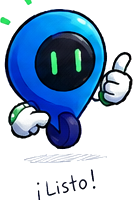
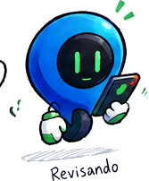

BP
Barreiros Pía
Diseño y comunicación

Preparando tu camino...
 ubiko
ubiko
Conocé la historia, la identidad y el equipo que está detrás de Ubiko.

Elegimos el nombre Ubiko a partir de “ubico”, una palabra asociada con encontrar una ubicación. Cambiamos la “c” por una “k” para construir una marca moderna, fácil de recordar y conectada con nuestras raíces regionales.
Imaginamos una herramienta que acerque a conductores y propietarios de playas de estacionamiento, adaptada a las necesidades de la movilidad local.
“Tecnología que simplifica tu camino”.
Una experiencia clara y segura.
Más información para elegir.
Una propuesta pensada desde Corrientes.
Somos un equipo que trabaja para convertir una idea en una experiencia útil.
Diseño y comunicación
Producto y desarrollo
Investigación y propuesta
Diseño de experiencia
Organización y desarrollo
Los roles son orientativos: editá los textos para que coincidan con las tareas reales de cada integrante.

Queremos que encontrar dónde estacionar sea una parte sencilla de cada recorrido.
Conocer el prototipo ↗